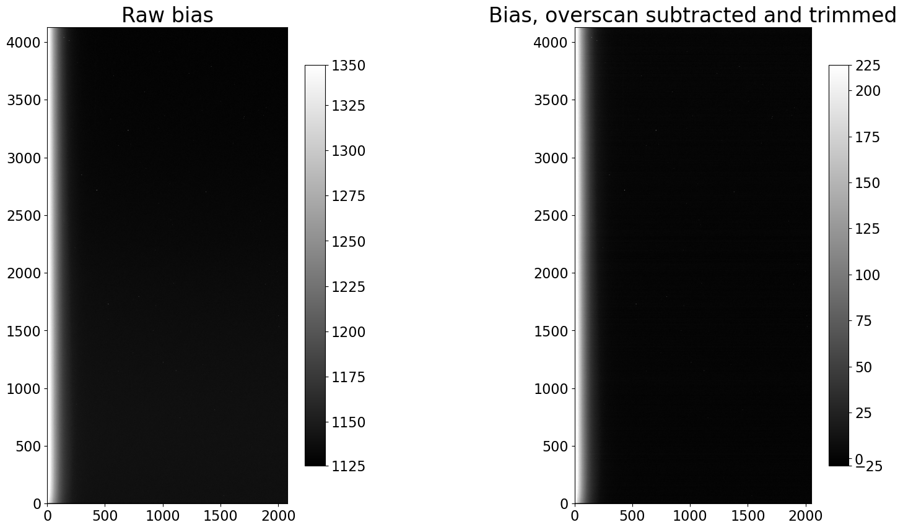

Калибровка bias изображений
Contents
2.2. Калибровка bias изображений#
Цель калибровки bias изображений троякая:
Вычесть overscan, если вы решили, что это улучшит качество ваших научных данных. См. это обсуждение overscan для руководства.
Обрезать область overscan с изображения, если она присутствует, независимо от того, решили ли вы вычитать overscan или нет.
Объединить bias изображения в “комбинированный” bias для использования при калибровке остальных изображений. Цель объединения нескольких изображений — максимально снизить шум считывания в комбинированном bias.
Подход в этом ноутбуке заключается в том, чтобы обработать одно изображение, посмотреть на эффекты, которые оказал шаг обработки на это изображение, а затем продемонстрировать, как откалибровать папку, содержащую несколько изображений этого типа.
from pathlib import Path
import os
from astropy.nddata import CCDData
from astropy.visualization import hist
import ccdproc as ccdp
import matplotlib.pyplot as plt
import numpy as np
from convenience_functions import show_image
# Use custom style for larger fonts and figures
plt.style.use('guide.mplstyle')
2.2.1. Данные для этих примеров#
См. ноутбук предисловия для ссылок на загрузку всех данных.
2.2.2. Пример 1: С вычитанием overscan#
2.2.2.1. Выберите, куда поместить откалиброванные изображения примера 1#
Хотя можно перезаписать сырые данные откалиброванными изображениями, это не рекомендуется. Здесь мы создаем папку example1-reduced, которая будет содержать откалиброванные данные, и создаем её, если она не существует.
calibrated_data = Path('.', 'example1-reduced')
calibrated_data.mkdir(exist_ok=True)
2.2.2.2. Создайте коллекцию файлов изображений для сырых данных#
example_cryo_path = Path('example-cryo-LFC')
files = ccdp.ImageFileCollection(example_cryo_path)
files.summary['file', 'imagetyp', 'filter', 'exptime', 'naxis1', 'naxis2']
| file | imagetyp | filter | exptime | naxis1 | naxis2 |
|---|---|---|---|---|---|
| str14 | str9 | str2 | float64 | int64 | int64 |
| ccd.001.0.fits | BIAS | i' | 0.0 | 2080 | 4128 |
| ccd.002.0.fits | BIAS | i' | 0.0 | 2080 | 4128 |
| ccd.003.0.fits | BIAS | i' | 0.0 | 2080 | 4128 |
| ccd.004.0.fits | BIAS | i' | 0.0 | 2080 | 4128 |
| ccd.005.0.fits | BIAS | i' | 0.0 | 2080 | 4128 |
| ccd.006.0.fits | BIAS | i' | 0.0 | 2080 | 4128 |
| ccd.014.0.fits | FLATFIELD | g' | 70.001 | 2080 | 4128 |
| ccd.015.0.fits | FLATFIELD | g' | 70.011 | 2080 | 4128 |
| ccd.016.0.fits | FLATFIELD | g' | 70.001 | 2080 | 4128 |
| ccd.017.0.fits | FLATFIELD | i' | 7.0 | 2080 | 4128 |
| ccd.018.0.fits | FLATFIELD | i' | 7.0 | 2080 | 4128 |
| ccd.019.0.fits | FLATFIELD | i' | 7.0 | 2080 | 4128 |
| ccd.037.0.fits | OBJECT | g' | 300.062 | 2080 | 4128 |
| ccd.043.0.fits | OBJECT | i' | 300.014 | 2080 | 4128 |
darks_only = ccdp.ImageFileCollection(example_cryo_path / 'darks')
darks_only.summary['file', 'imagetyp', 'exptime']
| file | imagetyp | exptime |
|---|---|---|
| str14 | str4 | float64 |
| ccd.002.0.fits | BIAS | 0.0 |
| ccd.013.0.fits | DARK | 300.0 |
| ccd.014.0.fits | DARK | 300.0 |
| ccd.015.0.fits | DARK | 300.0 |
| ccd.017.0.fits | DARK | 70.0 |
| ccd.018.0.fits | DARK | 70.0 |
| ccd.019.0.fits | DARK | 70.0 |
| ccd.023.0.fits | DARK | 7.0 |
| ccd.024.0.fits | DARK | 7.0 |
| ccd.025.0.fits | DARK | 7.0 |
2.2.2.3. Определите область overscan для LFC Chip 0#
См. обсуждение этой камеры в ноутбуке Overscan для подходящей области overscan, которую следует использовать для этой камеры. Обратите внимание, в частности, что она отличается от значения, указанного в ключевом слове BIASSEC в заголовке изображений.
Аффилированный пакет astropy ccdproc предоставляет две полезные функции:
subtract_overscanдля вычитания overscan из изображения, иtrim_imageдля обрезки overscan.
Сначала давайте посмотрим на значения BIASSEC, которые иногда (но не всегда) указывают, что присутствует overscan и какая часть чипа является overscan, а также на значения CCDSEC, которые иногда присутствуют, но не всегда, и указывают, на какую часть чипа попадал свет.
Обратите внимание, что ни один из них не является стандартным; иногда, например, вместо ccdsec используется trimsec, и вероятно существуют другие варианты. В некоторых изображениях может вообще не быть ни одного из этих ключевых слов в заголовке. Это не обязательно означает, что overscan отсутствует. Лучший совет — внимательно проверить документацию для камеры, которую вы используете.
files.summary['file', 'imagetyp', 'biassec', 'ccdsec', 'datasec'][0]
| file | imagetyp | biassec | ccdsec | datasec |
|---|---|---|---|---|
| str14 | str9 | str18 | str15 | str15 |
| ccd.001.0.fits | BIAS | [2049:2080,1:4127] | [1:2048,1:4128] | [1:2048,1:4128] |
Заголовок fits утверждает, что overscan простирается от 2049-го столбца до конца изображения (это индексация с единицы) и что часть изображения, подвергшаяся воздействию света, простирается по всем строкам и от первого столбца до 2048-го столбца (опять же, это индексация с единицы).
2.2.2.4. Индексация FITS vs. Python#
Существует два различия между FITS и Python в терминах индексации:
Индексы Python начинаются с нуля (т.е. нумерация начинается с нуля), в то время как индексы FITS начинаются с единицы (т.е. нумерация начинается с единицы).
Порядок индексов меняется местами.
Например, представление FITS части чипа, подвергшейся воздействию света, — это [1:2048,1:4128]. Для доступа к этой части данных из массива NumPy в Python поменяйте порядок, чтобы индексация выглядела так: [0:4128, 0:2048] (или, более компактно [:, :2048]). Обратите внимание, что конечные индексы, указанные здесь для Python, верны, потому что вторая часть диапазона (после двоеточия) не включается в срез массива. Например, 0:2048 начинается с 0 (первый пиксель) и идет до 2048, но не включает его, поэтому последний включенный пиксель — 2047 (2048-й пиксель).
Как обсуждалось в ноутбуке Overscan, полезная область overscan для этой камеры начинается с 2055-го столбца, а не с столбца 2049, как указано ключевым словом BIASSEC в заголовке. Эта ситуация не является необычной; столбец 2049 — первый из столбцов, закрытых от света производителем, но существует некоторая утечка в эту область из остальной части CCD.
Если вы собираетесь использовать overscan, вам нужно тщательно изучить overscan в нескольких репрезентативных изображениях, чтобы понять, какую часть overscan использовать.
В дальнейшем мы будем использовать для overscan область (индексация Python/NumPy) [:, 2055:].
2.2.2.5. Вычтите, а затем обрежьте overscan (одно образцовое изображение)#
Использование subtract_overscan достаточно лаконично, как показано в ячейке ниже.
raw_biases = files.files_filtered(include_path=True, imagetyp='BIAS')
first_bias = CCDData.read(raw_biases[0], unit='adu')
WARNING: FITSFixedWarning: 'datfix' made the change 'Set MJD-OBS to 57402.000000 from DATE-OBS'. [astropy.wcs.wcs]
WARNING:astropy:FITSFixedWarning: 'datfix' made the change 'Set MJD-OBS to 57402.000000 from DATE-OBS'.
bias_overscan_subtracted = ccdp.subtract_overscan(first_bias, overscan=first_bias[:, 2055:], median=True)
Далее мы обрезаем полную область overscan (не только ту часть, которую мы использовали для вычитания overscan).
trimmed_bias = ccdp.trim_image(bias_overscan_subtracted[:, :2048])
fig, (ax1, ax2) = plt.subplots(1, 2, figsize=(20, 10))
show_image(first_bias.data, cmap='gray', ax=ax1, fig=fig)
ax1.set_title('Raw bias')
show_image(trimmed_bias.data, cmap='gray', ax=ax2, fig=fig)
ax2.set_title('Bias, overscan subtracted and trimmed')
Text(0.5, 1.0, 'Bias, overscan subtracted and trimmed')

2.2.2.6. Обсуждение#
Визуально изображения выглядят почти идентичными до и после калибровки. Единственное заметное различие — это сдвиг в значениях пикселей, как и следовало ожидать от вычитания одного и того же значения из каждого пикселя изображения. Это просто смещает нулевую точку.
Есть еще одно важное различие между изображениями: входное изображение использует 32 МБ памяти, в то время как откалиброванное изображение с вычитанием overscan использует примерно 128 МБ. Входное изображение хранится как беззнаковые 16-битные целые числа; откалиброванное изображение хранится как числа с плавающей точкой, которые по умолчанию в Python являются 64-битными float. Размер памяти также является размером, который файлы будут иметь при записи на диск (игнорируя любое сжатие). Вы можете уменьшить объем памяти и дисковое пространство, изменив dtype изображения: trimmed_bias.data = trimmed_bias.data.astype('float32'). Лучше всего делать это непосредственно перед записью изображения, потому что арифметические операции над изображением могут преобразовать его dtype обратно в float64.
2.2.2.7. Обработка папки bias изображений для LFC Chip 0#
Обработка каждого из bias изображений по отдельности была бы утомительной, в лучшем случае. Вместо этого мы можем использовать ImageFileCollection, созданную выше, для итерации только по bias изображениям, сохраняя каждое в папке calibrated_data. В этом примере файлы сохраняются несжатыми, потому что библиотека Python для сжатия gzip файлов чрезвычайно медленная.
for ccd, file_name in files.ccds(imagetyp='BIAS', # Just get the bias frames
ccd_kwargs={'unit': 'adu'}, # CCDData requires a unit for the image if
# it is not in the header
return_fname=True # Provide the file name too.
):
# Subtract the overscan
ccd = ccdp.subtract_overscan(ccd, overscan=ccd[:, 2055:], median=True)
# Trim the overscan
ccd = ccdp.trim_image(ccd[:, :2048])
# Save the result
ccd.write(calibrated_data / file_name)
WARNING: FITSFixedWarning: 'datfix' made the change 'Set MJD-OBS to 57403.000000 from DATE-OBS'. [astropy.wcs.wcs]
WARNING:astropy:FITSFixedWarning: 'datfix' made the change 'Set MJD-OBS to 57403.000000 from DATE-OBS'.
Давайте проверим, что мы действительно получили ожидаемые изображения, создав ImageFileCollection для папки с обработанными файлами и отобразив размер каждого изображения. Мы ожидаем, что изображения будут 2048 × 4128, и что будет то же количество обработанных bias изображений, что и входных bias изображений (шесть).
reduced_images = ccdp.ImageFileCollection(calibrated_data)
reduced_images.summary['file', 'imagetyp', 'naxis1', 'naxis2']
| file | imagetyp | naxis1 | naxis2 |
|---|---|---|---|
| str14 | str4 | int64 | int64 |
| ccd.001.0.fits | BIAS | 2048 | 4128 |
| ccd.002.0.fits | BIAS | 2048 | 4128 |
| ccd.003.0.fits | BIAS | 2048 | 4128 |
| ccd.004.0.fits | BIAS | 2048 | 4128 |
| ccd.005.0.fits | BIAS | 2048 | 4128 |
| ccd.006.0.fits | BIAS | 2048 | 4128 |
2.2.3. Пример 2: Без вычитания overscan, но с обрезкой изображений#
Если вы не вычитаете overscan, то единственная манипуляция, которую вам может потребоваться выполнить, — это обрезка overscan с изображений. Если в ваших изображениях нет области overscan, то даже это не нужно.
2.2.3.1. Выберите, куда поместить откалиброванные изображения примера 2#
Хотя можно перезаписать сырые данные откалиброванными изображениями, это не рекомендуется. Здесь мы создаем папку example2-reduced, которая будет содержать откалиброванные данные, и создаем её, если она не существует.
calibrated_data = Path('.', 'example2-reduced')
calibrated_data.mkdir(exist_ok=True)
files = ccdp.ImageFileCollection('example-thermo-electric')
files.summary['file', 'imagetyp', 'filter', 'exptime', 'naxis1', 'naxis2']
| file | imagetyp | filter | exptime | naxis1 | naxis2 |
|---|---|---|---|---|---|
| str31 | str5 | object | float64 | int64 | int64 |
| AutoFlat-PANoRot-r-Bin1-001.fit | FLAT | r | 1.0 | 4109 | 4096 |
| AutoFlat-PANoRot-r-Bin1-002.fit | FLAT | r | 1.0 | 4109 | 4096 |
| AutoFlat-PANoRot-r-Bin1-003.fit | FLAT | r | 1.0 | 4109 | 4096 |
| AutoFlat-PANoRot-r-Bin1-004.fit | FLAT | r | 1.0 | 4109 | 4096 |
| AutoFlat-PANoRot-r-Bin1-005.fit | FLAT | r | 1.0 | 4109 | 4096 |
| AutoFlat-PANoRot-r-Bin1-006.fit | FLAT | r | 1.02 | 4109 | 4096 |
| AutoFlat-PANoRot-r-Bin1-007.fit | FLAT | r | 1.06 | 4109 | 4096 |
| AutoFlat-PANoRot-r-Bin1-008.fit | FLAT | r | 1.11 | 4109 | 4096 |
| AutoFlat-PANoRot-r-Bin1-009.fit | FLAT | r | 1.16 | 4109 | 4096 |
| ... | ... | ... | ... | ... | ... |
| Dark-S001-R001-C003-NoFilt.fit | DARK | -- | 90.0 | 4109 | 4096 |
| Dark-S001-R001-C004-NoFilt.fit | DARK | -- | 90.0 | 4109 | 4096 |
| Dark-S001-R001-C005-NoFilt.fit | DARK | -- | 90.0 | 4109 | 4096 |
| Dark-S001-R001-C006-NoFilt.fit | DARK | -- | 90.0 | 4109 | 4096 |
| Dark-S001-R001-C007-NoFilt.fit | DARK | -- | 90.0 | 4109 | 4096 |
| Dark-S001-R001-C008-NoFilt.fit | DARK | -- | 90.0 | 4109 | 4096 |
| Dark-S001-R001-C009-NoFilt.fit | DARK | -- | 90.0 | 4109 | 4096 |
| Dark-S001-R001-C020-NoFilt.fit | DARK | -- | 90.0 | 4109 | 4096 |
| kelt-16-b-S001-R001-C084-r.fit | LIGHT | r | 90.0 | 4109 | 4096 |
| kelt-16-b-S001-R001-C125-r.fit | LIGHT | r | 90.0 | 4109 | 4096 |
2.2.3.2. Определите область overscan для этой камеры#
См. обсуждение этой камеры в ноутбуке Overscan для обсуждения области overscan этой камеры. Overscan для этой камеры не является полезным, но должен быть обрезан на этом этапе.
Эти заголовки содержат некоторую информацию в ключевых словах BIASSEC и TRIMSEC, указывающих, в соглашении о нумерации FITS, область overscan и научную область чипа.
files.summary['file', 'imagetyp', 'biassec', 'trimsec'][0]
| file | imagetyp | biassec | trimsec |
|---|---|---|---|
| str31 | str5 | str11 | str11 |
| AutoFlat-PANoRot-r-Bin1-001.fit | FLAT | [4096:4109] | [1:4096, :] |
Основываясь на этом и на решении не вычитать overscan для этой камеры, нам нужно будет только обрезать область overscan с изображений. См. обсуждение в разделе Индексация FITS vs. Python выше для некоторых деталей о различиях между индексацией FITS и Python. По сути, чтобы получить индексы Python из FITS, поменяйте порядок и вычтите единицу.
2.2.3.3. Обрежьте overscan (одно образцовое изображение)#
Функция trim_image из ccdproc удаляет часть изображения и при необходимости обновляет метаданные изображения.
Ниже мы получаем первое bias изображение.
raw_biases = files.files_filtered(include_path=True, imagetyp='BIAS')
first_bias = CCDData.read(raw_biases[0], unit='adu')
INFO:astropy:using the unit adu passed to the FITS reader instead of the unit adu in the FITS file.
INFO: using the unit adu passed to the FITS reader instead of the unit adu in the FITS file. [astropy.nddata.ccddata]
Существует два способа указания области для обрезки. Один — срезать изображение в Python; другой — использовать аргумент fits_section для trim_image.
Ячейка ниже использует секцию в стиле FITS.
trimmed_bias_fits = ccdp.trim_image(first_bias, fits_section='[1:4096, :]')
Ячейка ниже выполняет ту же обрезку, что и предыдущая, но со срезом в стиле Python.
trimmed_bias_python = ccdp.trim_image(first_bias[:, :4096])
np.testing.assert_allclose(trimmed_bias_python, trimmed_bias_fits)
2.2.3.4. Обработка папки bias изображений для примера 2#
Как в Примере 1 выше, мы можем использовать ImageFileCollection, которую мы создали, для итерации только по bias изображениям, сохраняя каждое в папке calibrated_data.
for ccd, file_name in files.ccds(imagetyp='BIAS', # Just get the bias frames
return_fname=True # Provide the file name too.
):
# Trim the overscan
ccd = ccdp.trim_image(ccd[:, :4096])
# Save the result
ccd.write(calibrated_data / file_name)
2.2.4. Пример 3: Вообще без overscan#
Если overscan отсутствует, то, в принципе, ничего не нужно делать с bias кадрами. Может быть удобно скопировать их в директорию с остальными вашими обработанными изображениями. Код ниже делает это.
calibrated_data = Path('.', 'example3-reduced')
calibrated_data.mkdir(exist_ok=True)
biases = files.files_filtered(imagetyp='BIAS', include_path=True)
import shutil
for bias in biases:
shutil.copy(bias, calibrated_data)